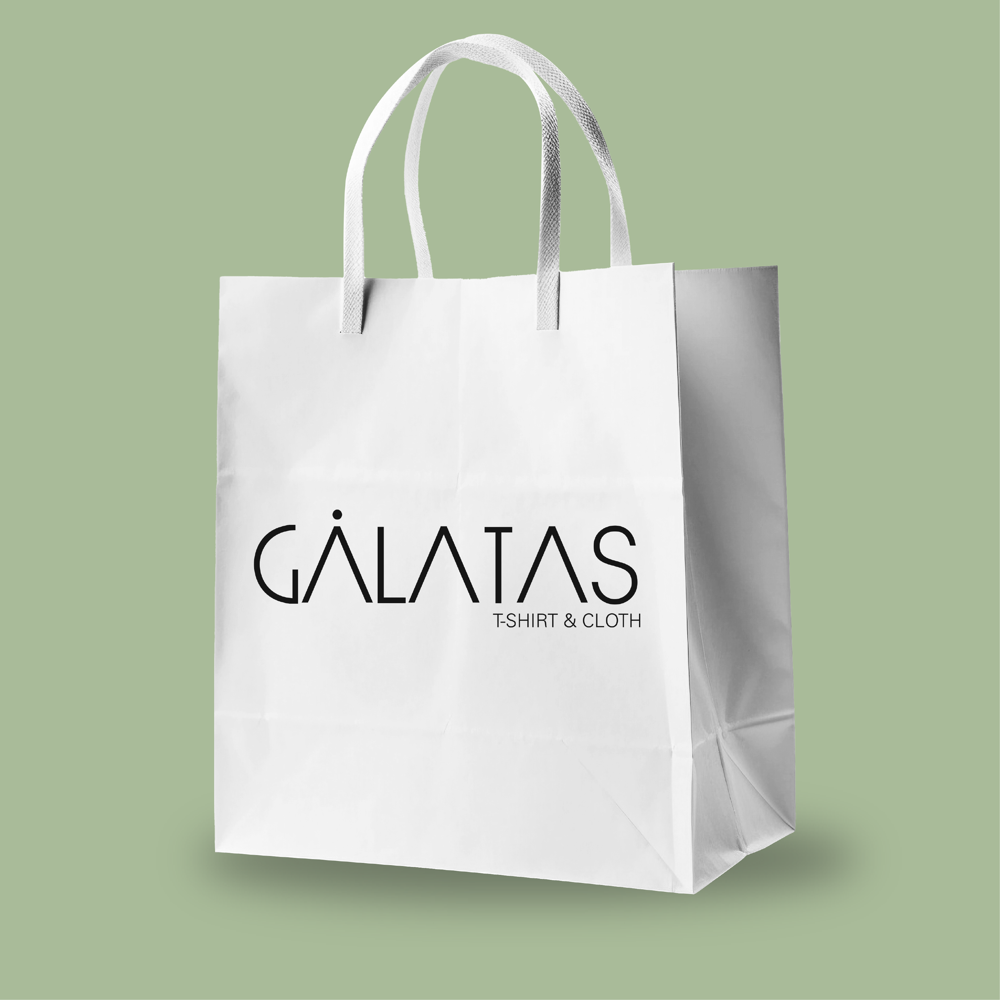
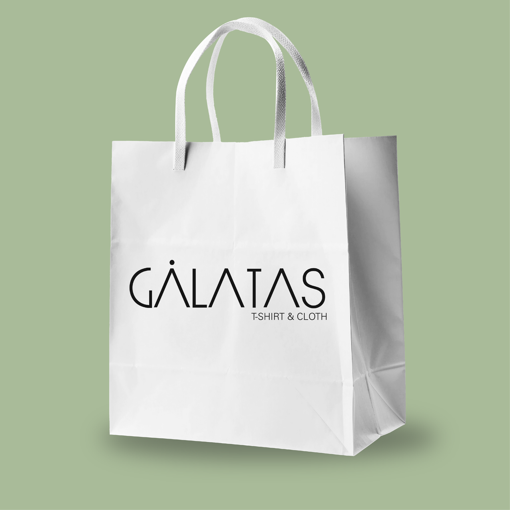

Eimi
Beauty
Es un emprendimiento dedicado al mundo de la belleza, donde compartiremos con el publico objetivos consejos sobre que productos se adaptan a cada persona, desde cosméticos, cremas faciales, productos de limpieza, como mantener tu rostro, maquillaje para cada ocasión y muchos más productos que Eimi Beauty ofrece para ti.
Se hizo una serie de bocetos para escoger los elementos gráficos que representan la marca, se escogieron curvas y asimetrías, en siguiente isotipo está compuesto por un corazón que representa la razón por lo que hacemos todas las cosas día a día para esta persona, la “E” que es el nombre de la persona que inició todo esto, a su vez se usó la paleta cromática de tonos monocromáticos en rosado.


 
